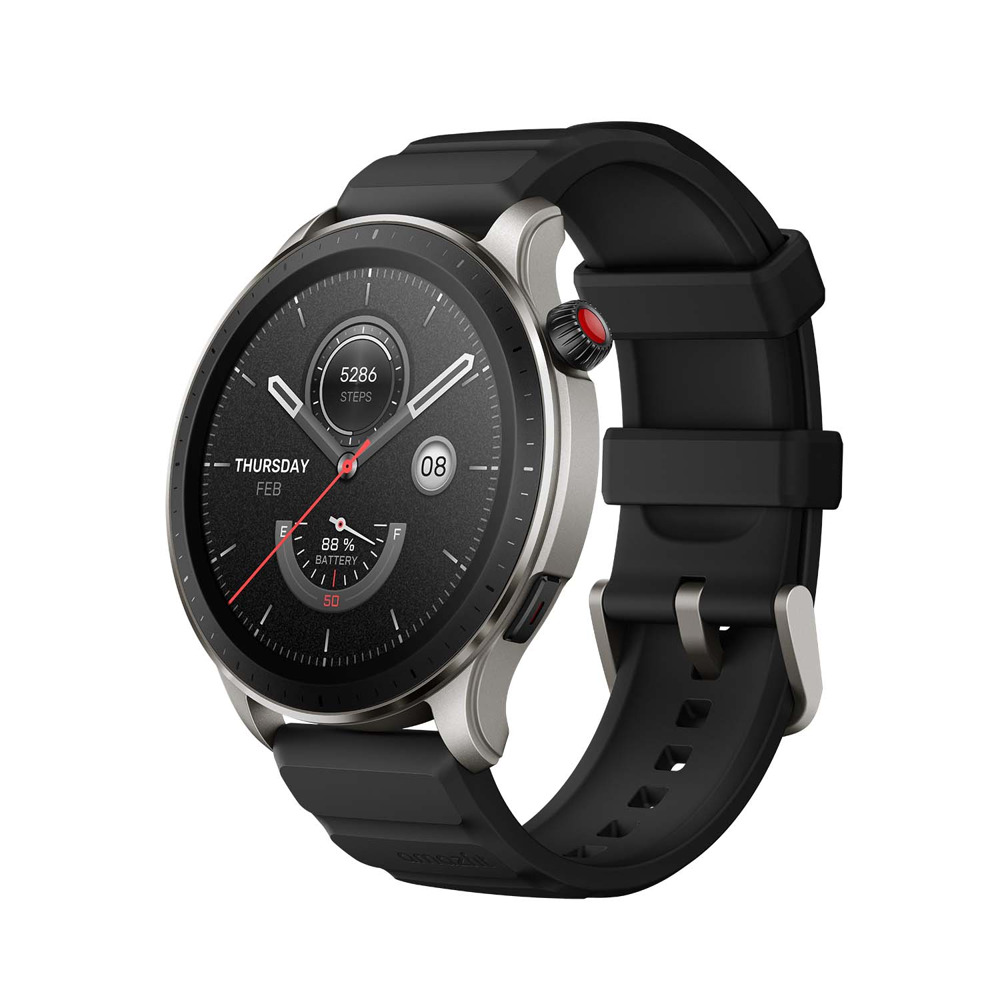

Amazfit GTR 4
Precio: $200.00
Si hay una marca que sabe bien cómo hacer smartwatch en relación calidad precio, esa es Amazfit. El listón estaba bastante alto el pasado curso con propuestas como el Amazfit GTR 3 Pro, modelo que deja ahora paso al Amazfit GTR 4. Junto al GTS 4, este es el reloj insignia de Amazfit, destacando principalmente por la inclusión de un GPS de doble frecuencia y prometiendo ser más preciso que nunca en las mediciones. Hemos podido probar a fondo este Amazfit GTR 4, una propuesta que ya te adelantamos que vuelve a brillar por lo completo que es, al igual que repite el mismo punto débil que llevamos viendo desde hace algunas generaciones en los relojes de Amazfit.